Yewon Min, Youngwook Kim, Jiyoung Park, Moonwook Ryu, Jun Seong Lee — ETRI
This supplementary material provides the technical and experimental details that were streamlined in the main paper due to the page limit. Tables 1–4, Figs. 1–2 and Eqs. (1)–(6) refer to items in the main paper; items on this page carry the prefix “S”.
Representative images, per-dataset counts, and what the quality gate removes.
Full training recipe, and the exact configuration used for every baseline.
Per-dataset breakdowns, the full ablation, and sweeps over $k$ and $c$.
Where the code lives and how to obtain the datasets.
Section 3.1 of the main paper lists the twelve datasets. The eight frontal datasets (CASIA v1.0, CASIA-Iris-Interval, CASIA-Iris-Thousand, CASIA-Iris-Lamp, PolyU Iris DB, MMU-v1, and the Cogent and Vista subsets of the IIITD Contact Lens Iris DB) are near-infrared benchmarks acquired under cooperative, frontal-gaze conditions. They differ in sensor, resolution, illumination and pupil dilation, and therefore provide diverse quality distributions.
The four off-angle datasets are complementary in acquisition conditions. EyeMovement consists of eye-movement videos recorded while users continuously followed gaze-guiding targets on a screen. OpenEDS was captured at close range and off-axis by cameras embedded in a VR headset. CASIA-Iris-Degradation contains controlled subsets for gaze (four directions), illumination, occlusion and eye state. CASIA-Iris-Africa exhibits diverse gaze, illumination and occlusion variations.
Identities are defined at the eye level — the left and right eyes of the same person are treated as different classes, and only comparisons between the same eye are regarded as genuine.
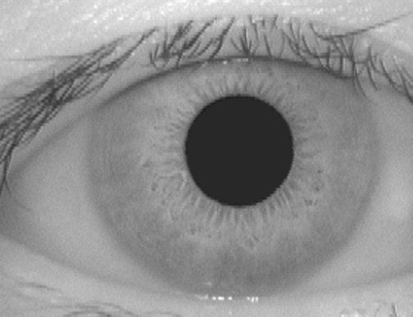
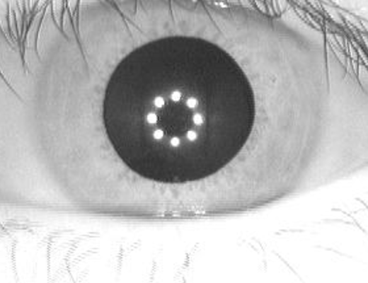
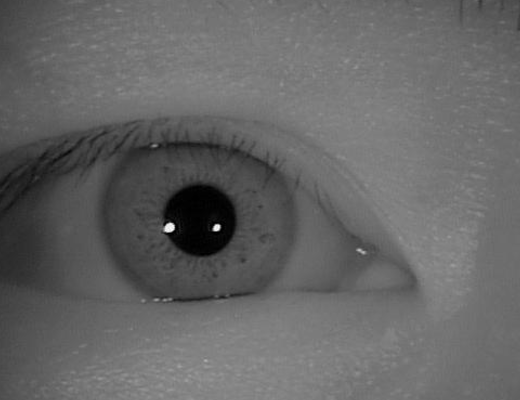
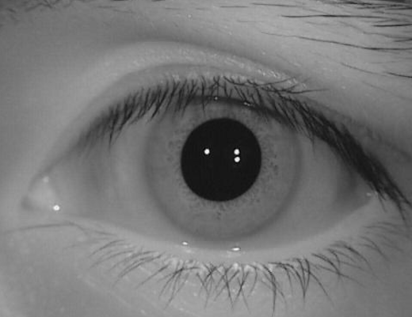
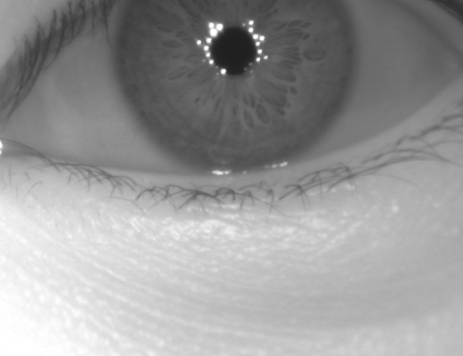
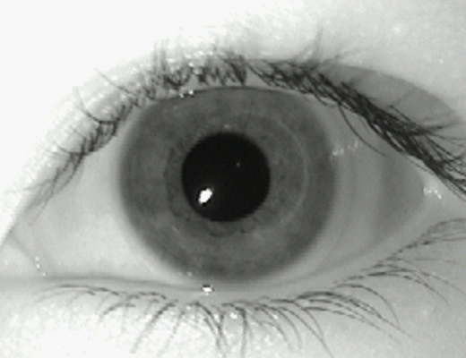
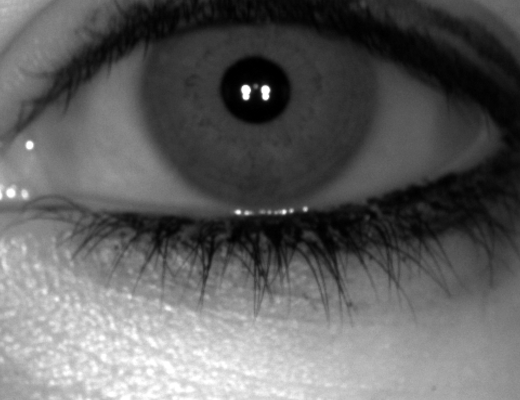
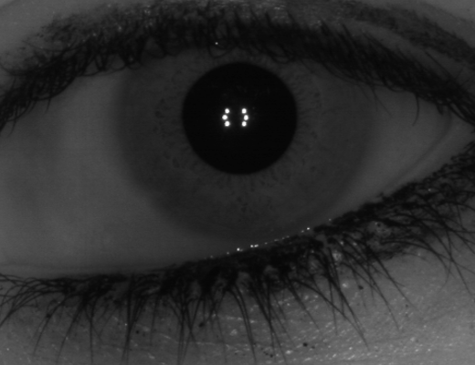
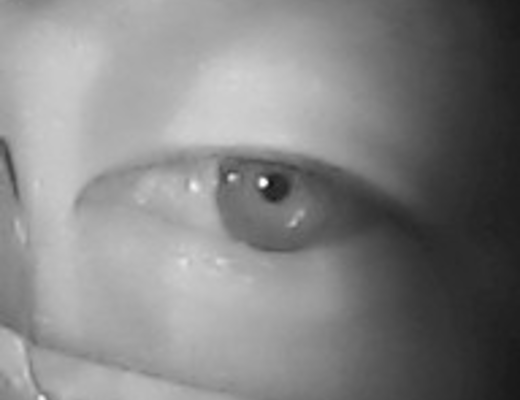
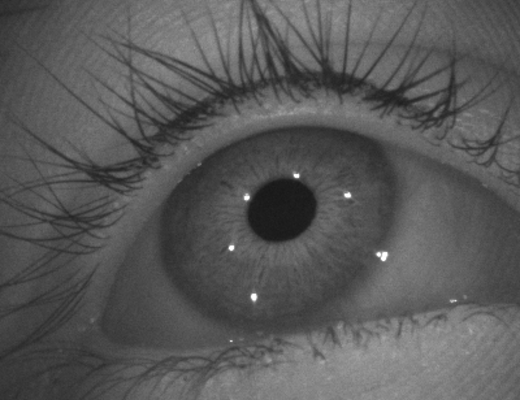
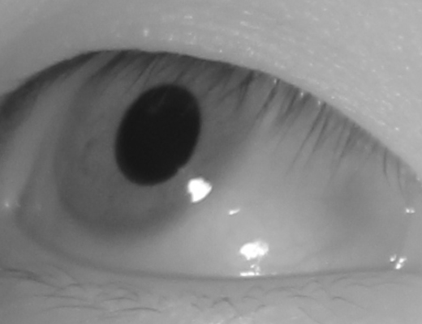
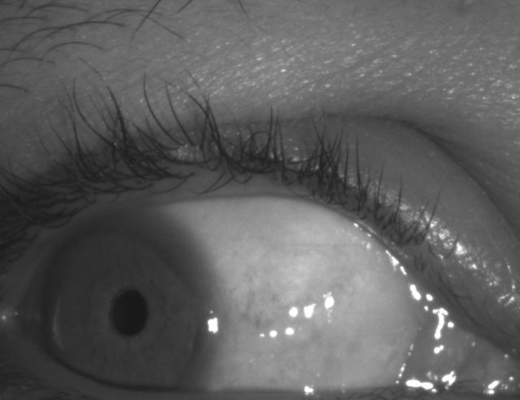
Table S1. Datasets used in the experiments. #IDs counts eye-level identities. “Test/fold” is the number of test images in the first fold of the $3\times2$ cross-validation protocol. “Removed” is the fraction of images rejected by the quality gate at $c=2$, which is what the FTE of the proposed method reports in Tables 1 and 2 of the main paper.
| Dataset | #Images | #IDs | Test/fold | Removed (%) |
|---|---|---|---|---|
| Frontal | ||||
| CASIA v1.0 (V1) | 756 | 108 | 378 | 2.91 |
| CASIA-Iris-Interval (Int) | 2,639 | 393 | 1,382 | 3.49 |
| CASIA-Iris-Thousand (Tho) | 20,000 | 2,000 | 10,000 | 0.10 |
| CASIA-Iris-Lamp (Lam) | 16,212 | 819 | 8,121 | 3.97 |
| PolyU Iris DB (Pol) | 6,270 | 417 | 3,135 | 3.48 |
| MMU-v1 (MMU) | 450 | 88 | 225 | 4.00 |
| IIITD-CLI Cogent (Cog) | 1,163 | 202 | 579 | 0.00 |
| IIITD-CLI Vista (Vis) | 1,000 | 198 | 500 | 3.30 |
| Off-angle | ||||
| EyeMovement (EM) | 9,120 | 76 | 4,560 | 1.56 |
| OpenEDS (OED) | 27,431 | 186 | 13,715 | 0.36 |
| CASIA-Iris-Degradation (Deg) | 36,539 | 510 | 18,400 | 3.08 |
| CASIA-Iris-Africa (Afr) | 28,717 | 2,044 | 14,217 | 6.35 |
Because the gate is a per-dataset statistic, the same rule removes between 0.00% and 6.35% of the images depending on the dataset. The rejected images are either blurred, so that the iris texture is not resolvable, or captured with the eye closed.
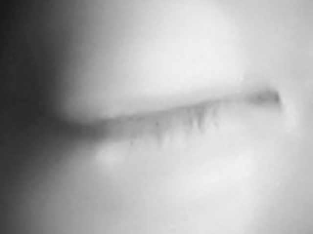
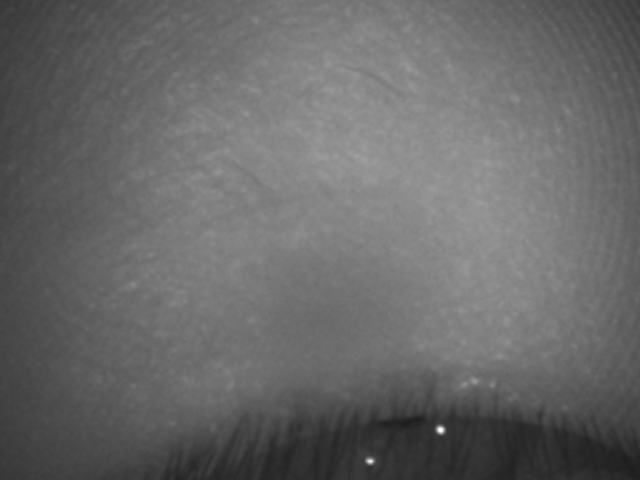
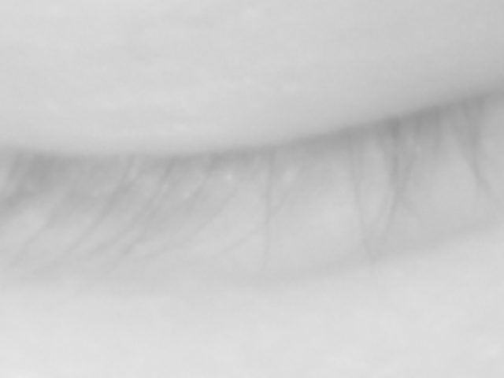
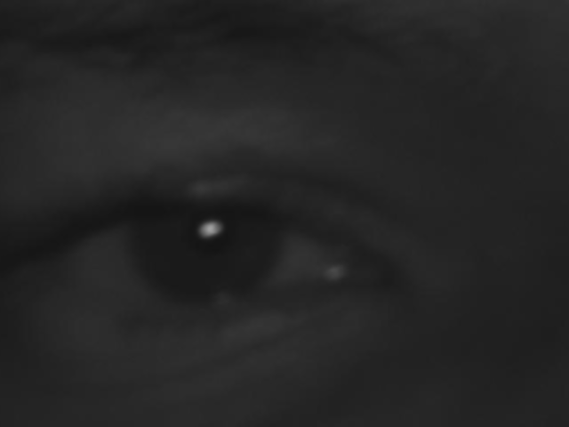
The backbone is an ImageNet-pretrained ResNet-34 whose classifier is replaced by a 512-dimensional embedding layer. The input is the grayscale periocular image, padded to a square with gray (127) without segmentation, resized to $224\times224$, replicated to three channels and normalized to $[-1,1]$. Each training batch contains $P=16$ identities $\times$ $K=4$ images (batch size 64), and the network is trained with the soft-margin (softplus) batch-hard triplet loss of Eq. (3) using Adagrad (learning rate 0.075, weight decay $10^{-5}$) for at most 150 epochs. Early stopping on the validation EER (patience 10) selects the checkpoint.
The gaze manifold of an identity is the affine subspace spanned by the top $k=3$ right singular vectors of its mean-removed embeddings — equivalently, the top eigenvectors of $A_iA_i^{\top}$ in Eq. (4). The same $k$, $c$ and normalization are used for all twelve datasets and for all feature extractors in Table 3 of the main paper; no per-dataset tuning is performed.
| Setting | Value |
|---|---|
| Backbone | ResNet-34, ImageNet-pretrained, classifier → 512-d embedding |
| Input | Grayscale periocular, gray-127 square pad, $224\times224$, 3-channel, $[-1,1]$ |
| Batch composition | $P=16$ identities $\times$ $K=4$ images (batch size 64) |
| Loss | Batch-hard triplet, soft-margin (softplus) |
| Optimizer | Adagrad, lr 0.075, weight decay $10^{-5}$ |
| Schedule | ≤ 150 epochs, early stopping on validation EER (patience 10) |
| Subspace dimension $k$ | 3, capped at $\min(k,\,N-1,\,D)$ |
| Quality gate $c$ | 2 |
| Protocol | Subject-disjoint $3\times2$ cross-validation, 15% of training identities held out for validation |
All comparison methods run the authors' released implementations with their default or recommended settings.
A real-time segmentation method that estimates the pupil and iris boundaries with a weighted adaptive
Hough transform and an ellipsopolar transform. We run the official USIT v3.0.0 chain
wahet (segmentation and rubber-sheet normalization to $512\times64$), lg (1-D
log-Gabor code) and hd (minimum Hamming distance over $\pm16$ bit shifts).
The open iris recognition toolkit of the University of Salzburg. We follow the combination recommended by
the toolkit authors: caht (contrast-adjusted Hough transform), qsw (quadratic
spline wavelet code) and hd with the -sf option, which excludes pairs whose masks
do not overlap at any shift instead of assigning them a distance of zero.
The BioSecure reference implementation with Viterbi-based boundary estimation, Gabor phase encoding and
fractional Hamming distance. It uses the default process.ini of the official distribution
(pupil diameter 50–160, iris diameter 160–280, $512\times64$ normalization, official filter
bank). The all-pairs matching was vectorized and verified to reproduce the official scores exactly.
The open pipeline (open-iris) of Worldcoin: CNN segmentation, classical iris-code encoding and
Hamming-distance matching. We run the complete pipeline including its built-in validators (off-gaze,
occlusion, pupil-to-iris ratio and sharpness thresholds), with the released segmentation weights as-is,
and match iris codes with the official HammingDistanceMatcher (rotation shift 15, separate
half matching, normalized distance).
Binarized statistical image features with BSIF filters retrained to be iris-domain-specific, on the CVRL segmentation. The released implementation and filter weights are used with masked fractional Hamming distance. The official code contains no quality check, so none is applied.
CNN embeddings trained with the ArcFace loss (ResNet-100) and with a triplet loss (ConvNeXt-tiny),
respectively, on normalized iris images. Both are evaluated zero-shot with the released weights. ArcIris
calls the official checkQuality (minimum pupil and iris radii of 12 and 16 pixels), which is
the source of its FTE. TripletIris has no quality check in the official code.
Represents and matches features as dynamic graphs for robustness to occlusion. It is evaluated zero-shot with the released single-scale weights and the official graph matching. Because its score is a graph similarity rather than a distance between embedding vectors, it cannot be combined with the proposed matching and is therefore absent from Table 3 of the main paper.
An embedding method that jointly learns uncertainty factors, and the baseline maxout CNN of the same repository. No trained weights are released, so both are retrained on the training folds of the same splits as the proposed method with the official settings: inputs normalized by open-iris and resized to $128\times128$ (UE-UGCL additionally applies the $3\times3$ median filter of its enhancement module), ArcFace margin softmax ($s=64$, $m=0.5$) with the KL term ($\lambda=0.01$) and the UGCL curriculum for UE-UGCL, SGD (initial learning rate 0.001, momentum 0.9, weight decay 0.001) with $\times0.1$ decay at epochs 30/50/70, 100 epochs and batch size 300. Matching uses the cosine distance of $L_2$-normalized embeddings.
Two deviations from the original papers are made for a fair protocol: no external-data pretraining is used, and the checkpoint is selected by the validation EER (as for the proposed method) instead of reporting the last epoch. Their published numbers are therefore not comparable with Tables 1 and 2 of the main paper. DGR, UE-UGCL and Maxout-BA share the same open-iris normalization stage (without the validators), which is why their FTE values coincide.
Table 1 of the main paper reports only averages over the eight frontal datasets. The trends hold per-dataset: the strongest methods (WCI, ArcIris, TripletIris and the proposed method) are within about 1% EER of each other on most datasets, and the proposed method is best or second best on four of the eight. Its largest frontal error occurs on MMU-v1 (EER 1.04%), the smallest dataset (450 images, about five per identity), where the leave-one-out manifold is estimated from only four images — consistent with the analysis of $k$ below. WCI reaches the lowest frontal errors, but only after rejecting 33.9% and 84.1% of the PolyU and Vista images by its validators, so its scores are computed on a much easier subset.
Table S2. Per-dataset EER (%) on the eight frontal datasets. Bold and underlined: best and second best per column.
| Method | V1 | Int | Tho | Lam | Pol | MMU | Cog | Vis |
|---|---|---|---|---|---|---|---|---|
| WAHET | 1.56 | 1.87 | 8.98 | 15.62 | 24.86 | 4.40 | 10.61 | 6.39 |
| USITv3 | 0.26 | 0.67 | 22.47 | 18.43 | 25.00 | 3.23 | 13.36 | 5.60 |
| OSIRIS | 0.60 | 0.89 | 6.60 | 4.66 | 14.87 | 6.12 | 1.62 | 1.63 |
| HDBIF | 0.67 | 0.89 | 4.13 | 2.10 | 1.62 | 1.34 | 0.19 | 0.34 |
| WCI | 0.00 | 0.00 | 0.49 | 0.12 | 0.79 | 0.02 | 0.00 | 0.00 |
| DGR | 2.61 | 1.65 | 3.18 | 4.93 | 5.02 | 1.55 | 2.51 | 4.05 |
| UE-UGCL | 15.93 | 11.13 | 7.69 | 6.06 | 5.67 | 12.72 | 12.69 | 12.02 |
| Maxout-BA | 22.60 | 17.54 | 10.59 | 10.11 | 9.05 | 16.49 | 20.88 | 19.96 |
| ArcIris | 0.29 | 0.32 | 1.32 | 0.84 | 0.99 | 1.08 | 0.00 | 0.35 |
| TripletIris | 0.33 | 0.46 | 2.43 | 0.68 | 1.07 | 0.58 | 0.89 | 0.20 |
| GazeMM (Ours) | 0.38 | 0.22 | 0.22 | 0.00 | 0.04 | 1.04 | 0.60 | 0.28 |
Table S3. Per-dataset FRR@FAR = $10^{-3}$ (%) on the eight frontal datasets.
| Method | V1 | Int | Tho | Lam | Pol | MMU | Cog | Vis |
|---|---|---|---|---|---|---|---|---|
| WAHET | 8.61 | 4.73 | 52.50 | 86.85 | 45.10 | 23.93 | 20.01 | 22.43 |
| USITv3 | 0.26 | 0.77 | 46.27 | 38.38 | 43.05 | 5.30 | 20.57 | 7.19 |
| OSIRIS | 0.97 | 1.16 | 21.35 | 13.61 | 36.64 | 15.11 | 2.48 | 2.05 |
| HDBIF | 1.21 | 1.41 | 10.56 | 4.07 | 3.22 | 1.89 | 0.33 | 0.42 |
| WCI | 0.00 | 0.00 | 0.68 | 0.14 | 0.97 | 0.00 | 0.00 | 0.00 |
| DGR | 7.34 | 5.73 | 14.51 | 27.59 | 20.08 | 5.30 | 8.43 | 9.10 |
| UE-UGCL | 68.40 | 56.41 | 40.95 | 33.75 | 26.51 | 68.56 | 58.03 | 55.35 |
| Maxout-BA | 81.11 | 74.49 | 54.72 | 49.77 | 41.45 | 76.15 | 75.64 | 75.13 |
| ArcIris | 0.38 | 0.43 | 3.25 | 1.40 | 1.67 | 1.74 | 0.00 | 0.45 |
| TripletIris | 1.23 | 1.61 | 12.17 | 2.03 | 3.02 | 1.48 | 3.26 | 0.37 |
| GazeMM (Ours) | 2.14 | 0.76 | 0.54 | 0.00 | 0.02 | 6.47 | 4.21 | 0.83 |
Table S4. Per-dataset failure-to-enroll rate (FTE, %) on the eight frontal datasets.
| Method | V1 | Int | Tho | Lam | Pol | MMU | Cog | Vis |
|---|---|---|---|---|---|---|---|---|
| WAHET | 0.0 | 0.0 | 0.0 | 0.0 | 0.0 | 0.0 | 0.0 | 0.0 |
| USITv3 | 0.0 | 0.0 | 0.0 | 0.0 | 0.0 | 0.0 | 0.0 | 0.0 |
| OSIRIS | 0.0 | 0.0 | 0.2 | 0.1 | 10.1 | 0.9 | 0.3 | 0.0 |
| HDBIF | 0.0 | 0.0 | 0.0 | 0.0 | 0.0 | 0.0 | 0.0 | 0.0 |
| WCI | 1.7 | 0.9 | 7.7 | 2.2 | 33.9 | 0.0 | 2.5 | 84.1 |
| DGR | 0.9 | 0.8 | 7.6 | 1.8 | 0.7 | 0.0 | 0.0 | 0.0 |
| UE-UGCL | 0.9 | 0.8 | 7.6 | 1.8 | 0.7 | 0.0 | 0.0 | 0.0 |
| Maxout-BA | 0.9 | 0.8 | 7.6 | 1.8 | 0.7 | 0.0 | 0.0 | 0.0 |
| ArcIris | 0.0 | 0.0 | 0.0 | 0.0 | 0.0 | 0.0 | 0.0 | 0.0 |
| TripletIris | 0.0 | 0.0 | 0.0 | 0.0 | 0.0 | 0.0 | 0.0 | 0.0 |
| GazeMM (Ours) | 2.9 | 3.5 | 0.1 | 4.0 | 3.5 | 4.0 | 0.0 | 3.3 |
Table 2 of the main paper gives EER and FTE. The proposed method also has the lowest FRR and the highest Rank-1 on every off-angle dataset. On CASIA-Iris-Africa the Rank-1 accuracy of all methods is below 80%: the dataset has only about 14 images per eye, acquired under unconstrained conditions with heavy occlusion, so many probes have few usable same-identity counterparts. The verification metrics on this dataset are nevertheless consistent with the other three.
Table S5. Per-dataset FRR@FAR = $10^{-3}$ (%) on the four off-angle datasets.
| Method | EM | OED | Deg | Afr |
|---|---|---|---|---|
| WAHET | 96.36 | 99.68 | 99.62 | 85.46 |
| USITv3 | 95.44 | 93.86 | 59.46 | 78.08 |
| OSIRIS | 95.13 | 90.85 | 83.44 | 62.28 |
| HDBIF | 71.75 | 89.37 | 54.00 | 57.97 |
| WCI | 63.95 | 88.38 | 11.29 | 19.21 |
| DGR | 62.08 | 88.90 | 75.64 | 63.76 |
| UE-UGCL | 57.26 | 87.44 | 63.92 | 56.57 |
| Maxout-BA | 69.42 | 90.87 | 77.78 | 86.49 |
| ArcIris | 67.13 | 88.21 | 37.91 | 44.46 |
| TripletIris | 78.42 | 87.55 | 90.12 | 72.45 |
| GazeMM (Ours) | 0.00 | 31.32 | 1.23 | 0.20 |
Table S6. Per-dataset Rank-1 accuracy (%) on the four off-angle datasets.
| Method | EM | OED | Deg | Afr |
|---|---|---|---|---|
| WAHET | 18.26 | 1.18 | 0.30 | 22.66 |
| USITv3 | 46.77 | 66.61 | 58.89 | 28.18 |
| OSIRIS | 43.79 | 88.36 | 76.29 | 39.82 |
| HDBIF | 84.52 | 87.96 | 87.32 | 48.42 |
| WCI | 99.15 | 92.81 | 98.04 | 58.31 |
| DGR | 99.08 | 93.62 | 96.34 | 46.81 |
| UE-UGCL | 98.72 | 92.94 | 95.84 | 48.91 |
| Maxout-BA | 97.79 | 90.96 | 93.76 | 34.65 |
| ArcIris | 98.22 | 92.57 | 92.75 | 52.37 |
| TripletIris | 97.45 | 92.36 | 91.36 | 46.68 |
| GazeMM (Ours) | 100.00 | 99.65 | 99.74 | 77.11 |
In this experiment, “P2P” is each extractor's original pairwise distance (cosine, angular or Euclidean) without score normalization, whereas the proposed matching comprises both the manifold residual distance and the local-scaling normalization. (The point-to-point row of Table 4 in the main paper, in contrast, keeps the normalization.)
Replacing point-to-point matching by the proposed matching reduces the EER on every dataset by roughly an order of magnitude or more for the four external extractors, and by a factor of 3 to 24 for the proposed embedding, and it lowers the FRR in every case. The gain is smallest on OpenEDS, where the FRR of the four external extractors remains at 48–61% and that of the proposed embedding is 31%. OpenEDS is an eye-tracking dataset whose frames include partially closed eyes and strong eyelid occlusion, for which little iris texture is visible in any representation. The absolute errors after manifold matching follow the quality of the underlying embeddings, which confirms that the gain comes from the matching stage and is independent of the extractor.
Table S7. Per-dataset generalization across feature extractors on the four off-angle datasets (EER / FRR@FAR = $10^{-3}$, %).
| Extractor | Matching | EM | OED | Deg | Afr |
|---|---|---|---|---|---|
| UE-UGCL | P2P | 10.70 / 57.26 | 11.61 / 87.44 | 13.16 / 63.92 | 12.45 / 56.57 |
| + GazeMM | 0.56 / 1.98 | 1.19 / 51.84 | 0.34 / 0.97 | 0.62 / 1.88 | |
| Maxout-BA | P2P | 15.10 / 69.42 | 27.62 / 90.87 | 18.64 / 77.78 | 27.16 / 86.49 |
| + GazeMM | 1.04 / 5.98 | 1.95 / 61.46 | 1.04 / 6.69 | 1.98 / 11.43 | |
| ArcIris | P2P | 15.64 / 67.13 | 16.20 / 88.21 | 16.54 / 37.91 | 17.69 / 44.46 |
| + GazeMM | 0.32 / 4.77 | 1.07 / 47.78 | 0.10 / 0.10 | 0.50 / 0.78 | |
| TripletIris | P2P | 14.94 / 78.42 | 11.98 / 87.55 | 17.98 / 90.12 | 17.60 / 72.45 |
| + GazeMM | 0.64 / 2.64 | 1.13 / 53.33 | 0.69 / 2.17 | 0.68 / 2.24 | |
| ResNet-34 (Ours) | P2P | 0.98 / 5.64 | 1.58 / 61.52 | 5.11 / 46.26 | 2.36 / 17.44 |
| + GazeMM | 0.00 / 0.00 | 0.57 / 31.32 | 0.25 / 1.23 | 0.10 / 0.20 |
Table 4 of the main paper reports the ablation on CASIA-Iris-Degradation only. Repeating it on all four off-angle datasets with the fold-to-fold standard deviation: replacing manifold matching by point-to-point matching is by far the most harmful change on every dataset. Score normalization helps clearly on CASIA-Iris-Degradation, whereas on the other three the remaining differences between variants are within one standard deviation. The quality gate changes the mean errors only marginally, but it reduces the variance at the strict operating point on CASIA-Iris-Degradation (FRR $2.00\pm2.15\% \rightarrow 1.23\pm0.53\%$).
Table S8. Component-wise ablation on the four off-angle datasets (EER / FRR@FAR = $10^{-3}$, %, mean$\pm$std over $3\times2$ folds). The point-to-point variant keeps the score normalization and the quality gate; “w/o quality gate” trains and evaluates with the gate disabled (FTE 0%).
| Variant | EM | OED | Deg | Afr |
|---|---|---|---|---|
| Point-to-point | 0.93±0.60 / 5.06±2.17 | 1.57±0.26 / 61.10±3.91 | 4.98±0.38 / 45.41±3.06 | 2.33±0.22 / 17.30±2.71 |
| w/o score norm. | 0.03±0.04 / 0.04±0.05 | 0.63±0.12 / 31.05±7.09 | 0.60±0.06 / 4.49±1.39 | 0.12±0.02 / 0.25±0.15 |
| w/o quality gate | 0.00±0.00 / 0.00±0.00 | 0.58±0.09 / 30.27±6.71 | 0.29±0.09 / 2.00±2.15 | 0.14±0.03 / 0.70±0.54 |
| GazeMM (full) | 0.00±0.00 / 0.00±0.00 | 0.57±0.07 / 31.32±8.39 | 0.25±0.02 / 1.23±0.53 | 0.10±0.02 / 0.20±0.17 |
Even $k=1$ — a single dominant gaze direction per identity — already removes most of the point-to-point error, which supports the low-dimensional hypothesis of Section 1 in the main paper. EyeMovement is saturated for every $k$. OpenEDS and CASIA-Iris-Degradation keep improving up to $k=20$, because these datasets provide many images per identity (about 150 and 70), so a higher-dimensional subspace can be estimated reliably. CASIA-Iris-Africa, with about 14 images per identity, is best at $k=5$ and degrades beyond it: as $k$ approaches the number of enrollment images, the subspace absorbs impostor directions as well and the residual loses discriminability.
The value $k=3$ used in the main paper was fixed a priori for all datasets and extractors. It is therefore a conservative choice, and the main-paper results on OpenEDS and CASIA-Iris-Degradation would improve further with a larger $k$. A data-dependent choice, e.g. $k$ proportional to the number of enrollment images, is left for future work.
Table S9. Effect of the subspace dimension $k$ on the four off-angle datasets (EER / FRR@FAR = $10^{-3}$, %, mean over $3\times2$ folds).
| $k$ | EM | OED | Deg | Afr |
|---|---|---|---|---|
| 1 | 0.04 / 0.03 | 0.73 / 41.84 | 0.55 / 5.72 | 0.17 / 1.16 |
| 2 | 0.01 / 0.00 | 0.63 / 35.51 | 0.34 / 2.54 | 0.12 / 0.41 |
| 3 (main paper) | 0.00 / 0.00 | 0.57 / 31.32 | 0.25 / 1.23 | 0.10 / 0.20 |
| 5 | 0.00 / 0.00 | 0.49 / 25.87 | 0.14 / 0.29 | 0.09 / 0.08 |
| 10 | 0.00 / 0.00 | 0.39 / 19.36 | 0.05 / 0.01 | 0.10 / 0.12 |
| 15 | 0.00 / 0.00 | 0.35 / 16.55 | 0.02 / 0.00 | 0.11 / 0.17 |
| 20 | 0.00 / 0.00 | 0.31 / 13.77 | 0.01 / 0.00 | 0.12 / 0.20 |
Repeating the full experiment (training included) with $c \in \{2,3,4\}$ on all twelve datasets: the gate removes 0–6.4% of the images at $c=2$, 0–3.1% at $c=3$ and almost nothing at $c=4$, yet the EER changes by at most about 0.2 points on every dataset, and not in a consistent direction. The main effect of the gate is on the stability of the strict operating point: on CASIA-Iris-Degradation the fold-to-fold standard deviation of FRR grows from $\pm0.5$ at $c=2$ to $\pm2.2$ at $c=4$, because a few severely blurred enrollment frames distort the manifold of their identity. The gate is thus a safeguard rather than a tuned component, and the same $c=2$ is used everywhere.
Table S10. Sensitivity to the quality-gate strictness $c$ (EER / FRR@FAR = $10^{-3}$ / FTE, %). A larger $c$ rejects fewer images.
| Dataset | $c=2$ (main) | $c=3$ | $c=4$ |
|---|---|---|---|
| Frontal | |||
| V1 | 0.38 / 2.14 / 2.9 | 0.28 / 1.74 / 0.1 | 0.25 / 1.16 / 0.0 |
| Int | 0.22 / 0.76 / 3.5 | 0.25 / 0.69 / 0.2 | 0.19 / 0.49 / 0.0 |
| Tho | 0.22 / 0.54 / 0.1 | 0.22 / 0.56 / 0.0 | 0.22 / 0.56 / 0.0 |
| Lam | 0.00 / 0.00 / 4.0 | 0.00 / 0.00 / 0.5 | 0.00 / 0.00 / 0.0 |
| Pol | 0.04 / 0.02 / 3.5 | 0.01 / 0.00 / 0.0 | 0.01 / 0.00 / 0.0 |
| MMU | 1.04 / 6.47 / 4.0 | 0.83 / 5.99 / 1.8 | 0.83 / 6.23 / 0.9 |
| Cog | 0.60 / 4.21 / 0.0 | 0.60 / 4.21 / 0.0 | 0.60 / 4.21 / 0.0 |
| Vis | 0.28 / 0.83 / 3.3 | 0.31 / 0.84 / 0.1 | 0.28 / 0.70 / 0.0 |
| Off-angle | |||
| EM | 0.00 / 0.00 / 1.6 | 0.02 / 0.02 / 0.4 | 0.00 / 0.00 / 0.0 |
| OED | 0.57 / 31.32 / 0.4 | 0.58 / 30.27 / 0.0 | 0.58 / 30.27 / 0.0 |
| Deg | 0.25 / 1.23 / 3.1 | 0.27 / 1.74 / 0.2 | 0.29 / 2.00 / 0.0 |
| Afr | 0.10 / 0.20 / 6.3 | 0.14 / 0.62 / 3.1 | 0.11 / 0.27 / 1.7 |
Source code is available at github.com/kimyoungwook7/GAZEMM. The iris datasets themselves cannot be redistributed here and must be obtained from their original providers under the respective license agreements.